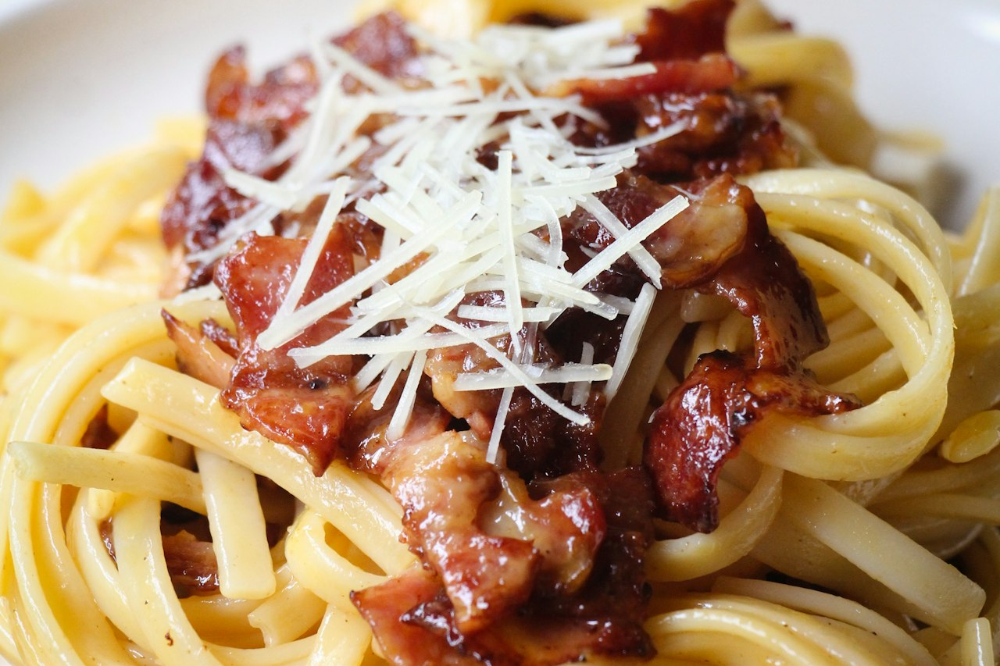

Guanciale Carbonara with Fresh Fettuccine
Classic Roman carbonara made with guanciale, fresh fettuccine, extra egg yolks, and a Parmesan-Grana Padano blend. No cream, no shortcuts. The sauce is pure emulsified eggs, pasta water, and rendered pork fat.
Italian · Dinner · High Protein · Pasta

970kcal
54gprotein
Makes 2 servings. Whole batch: 1940 kcal, 108g protein.
Ingredients
- Fresh Fettuccine
- Carbonara Sauce
Steps
- Mix flour with 3 whole eggs into a dough. Add a small drizzle of olive oil if dry. Knead until smooth, wrap, rest at least 30 minutes.
- Divide rested dough into 3-4 portions, keep others covered. Laminate at setting 1 (fold in thirds, rotate, repeat 2-3 times). Roll down through settings 2, 3, 4, 5. Stop at 5-6 — you want body, not paper thin.
- Flour both sides generously before cutting. Feed through fettuccine attachment, toss in more flour immediately, nest into portions. Rest 10-15 minutes before cooking.
- Whisk 2 whole eggs, 3 yolks, Parmesan, and Grana Padano together until fully combined. Add black pepper generously. Set aside at room temperature.
- Add guanciale to a cold pan and bring to medium-low heat. Render slowly until fat is translucent and edges are crispy, about 8-10 minutes. Do not rush. Turn off heat.
- Bring a large pot of lightly salted water to a boil. Go lighter on salt than you normally would — guanciale and cheese both carry significant salt. Drop fettuccine and cook until just barely al dente, about 2 minutes. Reserve 120ml pasta water before draining.
- Using tongs pull pasta directly into the guanciale pan. Toss in the guanciale fat over low heat for 30 seconds to coat every strand.
- Remove pan from heat entirely. Wait 60 seconds — critical step. If pan is too hot the eggs scramble.
- Pour egg mixture over pasta and toss constantly and vigorously. Add pasta water a splash at a time to loosen and emulsify. Keep tossing until glossy and creamy, coating every strand.
- Plate immediately. Finish with extra Grana Padano, more cracked black pepper, and fresh parsley if using. Eat right away.
The guanciale is non-negotiable — pancetta is a consolation prize. The pan cooling step before eggs is the most critical technique in this dish. Salt the pasta water lighter than usual since every other component is already salty. Pasta water is your emulsification tool — keep adding until the sauce is glossy and loose, it tightens as it sits. No cream ever. First attempt came out restaurant quality — fix next time: lighter hand on pasta water salt. The Parmesan + Grana Padano blend is excellent — nuttier and more complex than Parmesan alone.